Power BI Desktop에서 DAX 계산 만들기 1부#
이 랩의 예상 완료 시간은 45분입니다.
이 랩에서는 DAX(Data Analysis Expressions)를 사용하여 계산된 테이블, 계산 열 및 단순 측정값을 만듭니다.
이 랩에서는 다음 작업을 수행하는 방법을 알아봅니다.
계산된 테이블 만들기
계산된 열 만들기
측정값 만들기
랩 사례#
이 랩은 데이터 준비부터 보고서 및 대시보드로 게시에 이르기까지 배우기 위해 고안된 랩 시리즈 중 하나입니다. 어떤 순서로든 랩을 완료할 수 있습니다. 그러나 여러 랩을 진행하려는 경우 다음 순서를 따르는 것이 좋습니다.
Power BI Desktop에서 데이터 준비
Power BI Desktop에서 데이터 로드
Power BI에서 데이터 모델 디자인
Power BI Desktop에서 DAX 계산 만들기, 1부
Power BI Desktop에서 DAX 계산 만들기, 2부
Power BI Desktop에서 보고서 디자인, 1부
Power BI Desktop에서 보고서 디자인, 2부
AI 시각적 개체를 사용하여 데이터 분석
Power BI 대시보드 만들기
행 수준 보안 적용
연습 1: 계산된 테이블 만들기#
이 연습에서는 두 개의 계산된 테이블을 만듭니다. 첫 번째는 Salesperson 테이블입니다. 이 테이블을 사용하여 Sales 테이블과의 사이에 직접적인 관계를 지정할 수 있습니다. 두 번째는 Date 테이블입니다.
작업 1: 시작하기#
이 작업에서는 랩용 환경을 설정합니다.
중요: 이전 랩에서 계속 진행해 온 경우(그리고 해당 랩을 성공적으로 완료한 경우) 이 작업을 완료하지 마세요. 대신, 다음 작업부터 진행하세요.
Power BI Desktop을 열려면 작업 표시줄에서 Microsoft Power BI Desktop 바로 가기를 클릭합니다.

팝업 창을 닫으려면 창 왼쪽 위의 X를 클릭합니다.

시작 Power BI Desktop 파일을 열려면 파일 리본 탭을 클릭하여 Backstage 뷰를 엽니다.
보고서 열기를 선택합니다.

보고서 찾아보기를 클릭합니다.
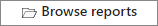
열기 창에서 D:\PL300\Labs\04-create-dax-calculations-in-power-bi-desktop\Starter 폴더로 이동합니다.
Sales Analysis 파일을 선택합니다.
열기를 클릭합니다.

열려 있는 정보 창을 모두 닫습니다.
파일 복사본을 만들려면 파일 리본 탭을 클릭하여 Backstage 뷰를 엽니다.
다른 이름으로 저장을 선택합니다.

변경 내용을 적용하라는 메시지가 표시되면 적용을 클릭합니다.

다른 이름으로 저장 창에서 D:\PL300\MySolution 폴더로 이동합니다.
저장을 클릭합니다.

작업 2: Salesperson 테이블 만들기#
이 작업에서는 Salesperson 테이블(Sales 테이블과 직접적인 관계 설정할 예정)을 만듭니다.
Power BI Desktop 보고서 뷰의 모델링 리본에 있는 계산 그룹에서 새 테이블을 클릭합니다.

계산을 만들거나 편집할 때 리본 바로 아래에 표시되는 수식 입력줄에서 Salesperson = 를 입력하고 Shift + Enter 키를 누르고, ‘Salesperson (Performance)’ 를 입력한 다음 Enter 키를 누릅니다.
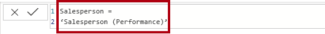
편의상 이 랩의 모든 DAX 정의를 D:\PL300\Labs\04-create-dax-calculations-in-power-bi-desktop\Assets\Snippets.txt에 위치한 코드 조각 파일에서 복사할 수 있습니다.
먼저 테이블 이름을 입력하고, 그 뒤에 등호 기호(=)를 입력한 다음, 테이블을 반환하는 DAX 수식을 입력하여 계산된 테이블을 만듭니다. 테이블 이름이 데이터 모델에 이미 존재하면 안 됩니다.
수식 입력줄은 유효한 DAX 수식을 입력하도록 지원합니다. 자동 완성, Intellisense, 색 구분과 같은 기능을 포함하여 신속하고 정확하게 수식을 입력할 수 있습니다.
이 테이블 정의를 통해 Salesperson (Performance) 테이블의 복사본을 만들게 됩니다. 데이터는 복사할 수 있지만 표시 유형, 서식 지정 등과 같은 모델 속성은 복사할 수 없습니다.
팁: “공백”(예: 캐리지 리턴 및 탭)을 입력하여 직관적이고 읽기 쉬운 형식으로 수식을 배치하는 것이 좋으며, 특히 수식이 길고 복잡할 때는 공백을 사용하는 것이 더욱 유용합니다. 캐리지 리턴을 입력하려면 Shift + Enter 키를 누릅니다. “공백”은 선택 사항입니다.
필드 창에서 테이블 아이콘은 아래와 같은 아이콘을 하고 있습니다.(계산된 테이블을 나타냄).

계산된 테이블은 테이블을 반환하는 DAX 수식을 사용하여 정의됩니다. 계산된 테이블은 값을 구체화하고 저장하기 때문에 데이터 모델의 크기가 증가된다는 점을 알고 있어야 합니다. 이 데이터 모델에서는 향후에 새로운 날짜 값이 테이블로 로드될 때 처럼, 수식에 종속 되어져 있는 테이블이 새로 고쳐 질 때 마다 다시 계산됩니다.
Power Query에서의 테이블과 달리, 계산된 테이블을 사용해서는 외부 데이터 원본의 데이터를 로드할 수 없습니다. Power BI Desktop 데이터 모델에 이미 로드된 항목에 대해서만 데이터를 변환할 수 있습니다.
모델 뷰로 전환합니다.
이제 Salesperson 테이블을 사용할 수 있습니다(이 테이블이 안 보인다면, 가로로 스크롤하여 찾으세요).
Salesperson | EmployeeKey 열에서 Sales | EmployeeKey 열로 관계를 만듭니다.
Salesperson (Performance) 테이블과 Sales 테이블 간의 비활성 관계를 마우스 오른쪽 단추로 클릭한 다음 삭제를 선택합니다.
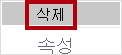
삭제 확인 대화 상자가 나타나면 클릭 확인합니다.
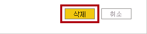
Salesperson 테이블에서 다음 열을 한꺼번에 선택하여 숨깁니다(숨김 속성을 예로 설정).
EmployeeID
EmployeeKey
UPN
모델 다이어그램에서 Salesperson 테이블을 선택합니다.
속성 창의 설명 상자에 판매와 연관된 영업 직원을 입력합니다.
사용자가 테이블이나 필드에 커서를 가져가면 해당 설명이 필드 창에 도구 설명으로 나타납니다.
Salesperson (Performance) 테이블에 대한 설명을 다음과 같이 설정합니다. 지역과 관련된 영업 직원
이제 데이터 모델이 영업 직원을 분석할 때 두 가지 대안을 제공합니다. Salesperson 테이블에서는 영업 직원의 판매를 분석할 수 있으며, Salesperson (Performance) 테이블에서는 영업 직원에게 할당된 판매 지역의 매출을 분석할 수 있습니다.
작업 3: 날짜 테이블 만들기#
이 작업에서는 날짜 테이블을 만듭니다.
데이터 뷰로 전환합니다.
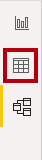
홈 리본 탭의 계산 그룹 내에서 새 테이블을 클릭합니다.
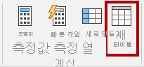
수식 표시줄에서 다음을 입력합니다.
DAX
Date = CALENDARAUTO(6)
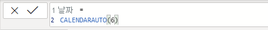
CALENDARAUTO() 함수는 날짜 값으로 구성된 단일 열을 지닌 테이블을 반환합니다. “Auto” 동작은 데이터 모델에 있는 모든 날짜 열을 검색하여 데이터 모델에 저장된 가장 빠른 날짜 값과 가장 늦은 날짜 값을 확인합니다. 그런 다음, 이 범위의 각 날짜에 대해 한 개의 행을 만들어 전체 연도의 데이터가 저장되도록 이 범위를 어느 방향으로든 확장합니다.
이 함수에는 1년의 마지막 달을 뜻하는 숫자를 선택적으로 인자로 받아 사용할 수 있습니다. 생략할 경우 값은 12입니다. 즉, 12월이 연도의 마지막 달입니다. 랩 시나리오를 위해 6을 입력합니다. 즉, 6월이 연도의 마지막 달입니다.
날짜 값의 열을 확인합니다.
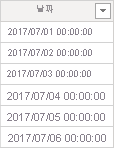
표시되는 날짜는 미국 국가별 설정(mm/dd/yyyy)을 사용하여 서식이 지정됩니다.
상태 표시줄의 왼쪽 아래 모서리에 있는 테이블 통계에서 5개 전체 연도의 데이터를 나타내는 1,826개 행의 데이터가 생성되었는지 확인합니다.
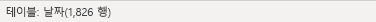
작업 4: 계산 열 만들기#
이 작업에서는 다른 열을 추가하여 다른 시간 단위 별로 필터링 및 그룹화를 가능하게 합니다. 또한 다른 열의 정렬 순서를 제어하는 계산된 열을 만듭니다.
편의상 이 랩의 모든 DAX 정의를 D:\PL300\Labs\04-create-dax-calculations-in-power-bi-desktop\Assets\Snippets.txt에 위치한 코드 조각 파일에서 복사할 수 있습니다.
테이블 도구 상황별 리본에서 계산 그룹 내에 있는 새 열을 클릭합니다.
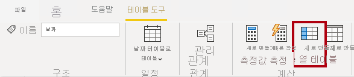
수식 표시줄에서 다음을 입력(하거나 코드 조각 파일에서 복사)한 후 Enter 키를 누릅니다.
DAX
Year = "FY" & YEAR('Date'[Date]) + IF(MONTH('Date'[Date]) > 6, 1)
먼저 열 이름을 입력하고, 그 뒤에 등호 기호(=)를 입력한 다음, 단일 값 결과를 반환하는 DAX 수식을 입력하여 계산된 열을 만듭니다. 열 이름은 테이블에 이미 존재하면 안 됩니다.
이 수식에서는 날짜의 연도 값을 사용하지만 7월부터는 연도 값에 1을 더합니다. 이것은 Adventure Works의 회계 연도를 계산하는 방법입니다.
새 열이 추가되었는지 확인합니다.
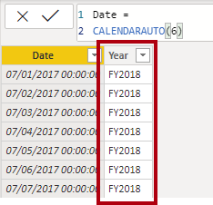
코드 조각 파일 정의를 사용하여 Date 테이블에 대해 다음 두 개의 계산된 열을 만듭니다.
Quarter
Month
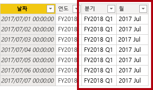
계산의 유효성을 검사하려면 보고서 뷰로 전환합니다.
새 보고서 페이지를 만들려면 왼쪽 아래에서 더하기 아이콘을 클릭합니다.
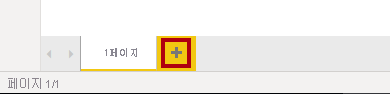
새 보고서 페이지에 행렬 시각적 개체를 추가하려면 시각화 창에서 행렬 시각적 개체 유형을 선택합니다.
팁: 각 아이콘 위에 커서를 올려 놓으면 시각적 개체 유형을 설명하는 도구 설명을 표시할 수 있습니다.

필드 창의 Date 테이블 내부에서 Year 필드를 행 웰/영역으로 끌어갑니다.
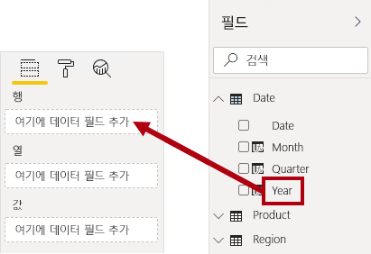
Month 필드를 Year 필드 바로 아래 행 웰/영역으로 끌어갑니다.
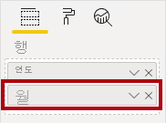
행렬 시각적 개체의 오른쪽 위(또는 시각적 개체 위치에 따라 맨 아래)에서 이중으로 갈라진 화살표 아이콘(이것은 모든 연도를 한 수준 아래로 확장하게 함)을 클릭합니다.

연도가 월로 확장되고, 월은 시간순이 아닌 알파벳 순으로 정렬됩니다.
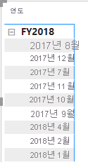
기본적으로 텍스트 값은 알파벳 순으로 정렬되고 숫자는 가장 작은 값에서 가장 큰 값으로 정렬되며 날짜는 가장 빠른 날짜에서 가장 늦은 날짜로 정렬됩니다.
Month 필드 정렬 순서를 사용자가 지정하려면 데이터 뷰로 전환합니다.
Date 테이블에 MonthKey 열을 추가합니다.
DAX
MonthKey = (YEAR('Date'[Date]) * 100) + MONTH('Date'[Date])
이 수식은 각 연도/월 조합에 대해 숫자 값을 계산합니다.
데이터 뷰에서 새 열에 숫자 값이 포함되어 있는지 확인합니다(예: 2017년 7월의 경우 201707 등).
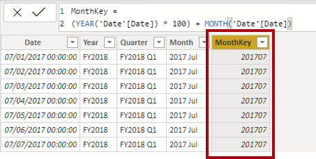
보고서 뷰로 다시 전환합니다.
필드 창에서 Month 필드가 선택되어 있는지 확인합니다(선택하면 진한 회색 배경이 표시됨).
열 도구 상황별 리본의 정렬 그룹에서 열 기준 정렬을 클릭한 다음 MonthKey를 선택합니다.
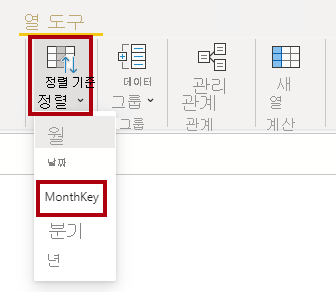
행렬 시각적 개체에서 월이 시간순으로 정렬되어 있습니다.

작업 5: 날짜 테이블 완료#
이 작업에서는 열을 숨기고 계층 구조를 만들어서 Date 테이블의 디자인을 완료합니다. 그런 다음 Sales 테이블과 Targets 테이블로 향하는 관계를 만듭니다.
모델 뷰로 전환합니다.
Date 테이블에서 MonthKey 열을 숨깁니다(숨김을 예로 설정).
필드 우측 창에서 Date 테이블을 선택하고 Year 열을 마우스 오른쪽 단추를 클릭한 후 계층 구조 만들기를 선택합니다.
마우스 오른쪽 단추를 클릭하고 이름 변경을 선택하여 새로 만들어진 계층 구조의 이름을 Fiscal로 변경합니다.
필드 창에서 나머지 2개의 필드를 선택하고 마우스 오른쪽 단추를 클릭합니다. 계층 구조에 추가 -> Fiscal를 선택하여 해당 필드를 Fiscal 계층 구조에 추가합니다.
Quarter
Month

다음 두 가지 모델 관계를 만듭니다.
Date | Date에서 Sales | OrderDate로
Date | Date에서 Targets | TargetMonth로
다음 두 열을 숨깁니다.
Sales | OrderDate
Targets | TargetMonth
작업 6: 날짜 테이블 표시#
이 작업에서는 Date 테이블을 날짜 테이블로 표시합니다.
보고서 뷰로 전환합니다.
필드 창에서 Date 테이블(Date 필드 아님)을 선택합니다.
테이블 도구 상황별 리본의 달력 그룹에서 날짜 테이블로 표시를 클릭한 다음 날짜 테이블로 표시를 선택합니다.

날짜 테이블로 표시 창의 날짜 열 드롭다운 목록에서 Date를 선택합니다.
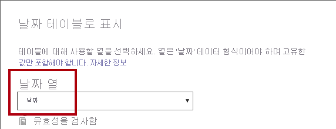
확인을 클릭합니다.
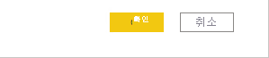
Power BI Desktop 파일을 저장합니다.
Power BI Desktop은 이제 이 테이블이 날짜(시간)를 정의하고 있음을 이해하게 됩니다. 이는 시간 인텔리전스 계산을 사용하고자 할 때 중요합니다. 추후 Power BI Desktop에서 DAX 계산 만들기, 2부 랩에서 시간 인텔리전스 계산 작업을 할 예정입니다.
데이터 원본에 날짜 테이블이 없을 때는 날짜 테이블에 대한 이러한 디자인 접근 방식이 적합합니다. 데이터 웨어하우스가 있는 경우 데이터 모델의 날짜 논리를 지금 처럼 “재정의”하는 대신 날짜 차원 테이블에서 날짜 데이터를 로드하는 것이 좋습니다.
연습 2: 측정값 만들기#
이 연습에서는 여러 측정값을 만들고 형식을 지정합니다.
작업 1: 단순 측정값 만들기#
이 작업에서는 간단한 측정값을 만듭니다. 간단한 측정값은 단일 열의 값을 집계하거나 테이블의 행 개수를 계산합니다.
보고서 뷰에서, 2페이지의 필드 창에서 Sales | Unit Price 필드를 행렬 시각적 개체로 끌어옵니다.
랩에서는 약식 표기법을 사용하여 필드를 참조합니다. 다음과 같이 표시됩니다. Sales | Unit Price. 이 예에서 Sales는 테이블 이름이고 Unit Price는 필드 이름입니다.

이전의 Power BI Desktop에서 데이터 모델링 랩에서 확인했던 것처럼, Average를 기준으로 내용이 요약되도록 Unit Price 열을 설정합니다. 행렬 시각적 개체에 표시되는 결과는 월평균 단가(단가 값의 합을 단가 개수로 나눈 값)입니다.
시각적 필드 창(시각화 창 아래에 있음)의 값 필드 웰/영역에 Unit Price가 나열됩니다.
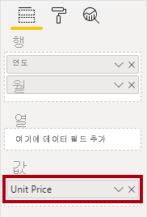
Unit Price의 아래쪽 화살표를 클릭한 다음 사용 가능한 메뉴 옵션을 확인합니다.
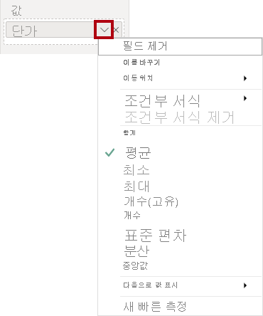
시각적 숫자 열을 사용하면 보고서 작성자가 보고서 디자인 시 열 값이 요약되는(또는 요약되지 않는) 방식을 결정할 수 있습니다. 그러면 부적절한 보고가 발생할 수 있습니다. 그러나 일부 데이터 모델러는 운에 맡기는 것을 좋아하지 않아 이러한 열은 숨기고, 대신 측정값을 통해 정의된 집계된 값을 선택하게 됩니다. 이번 랩에서 이러한 접근 방식을 사용할 예정입니다.
측정값을 만들려면 필드 창에서 Sales 테이블을 마우스 오른쪽 단추로 클릭한 다음 새 측정값을 선택합니다.
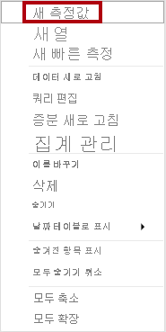
수식 입력줄에 다음 측정값 정의를 추가합니다.
DAX
Avg Price = AVERAGE(Sales[Unit Price])
Avg Price 측정값을 행렬 시각적 개체에 추가합니다.
그러면 Unit Price 열과 동일한 결과가 생성됩니다(그러나 서식 지정은 다름).
값 웰에서 Avg Price 필드의 메뉴를 열면 집계 방법을 변경할 수 없다는 것을 알 수 있습니다.
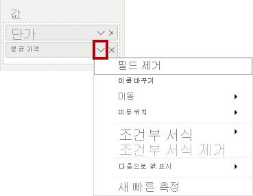
측정값의 집계 방법을 수정할 수는 없습니다.
조각 파일 정의를 사용하여 Sales 테이블에 대해 다음 5개의 측정값을 만듭니다.
Median Price
Min Price
Max Price
Orders
Order Lines
Orders 측정값에 사용되는 DISTINCTCOUNT() 함수는 주문을 한 번만 집계합니다(중복 항목은 무시함). Order Lines 측정값에 사용되는 COUNTROWS() 함수는 테이블에 있는 행을 계산합니다.
이 경우 Orders는 SalesOrderNumber 열에 있는 상이값을 세어서 계산되고, Order Lines 수는 단순히 테이블에 있는 행의 수입니다 (각 행이 주문 한 줄임).
모델 뷰로 전환한 다음 4개의 가격 측정값을 다중 선택합니다. Avg Price, Max Price, Median Price, Min Price.
측정값을 다중 선택하는 경우 다음 요구 사항을 구성합니다.
소수점 이하 두 자리로 서식 지정
Pricing이라는 표시 폴더에 할당
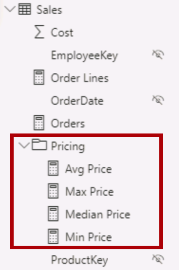
Unit Price 열을 숨깁니다.
이제 보고서 작성자가 Unit Price 열을 사용할 수 없습니다. 보고서 작성자는 모델에 추가된 가격 측정값을 사용해야 합니다. 이러한 데이터 모델 디자인 방법을 사용하면 보고서 작성자가 예를 들어 단가의 합계를 계산하는 등의 의도하지 않은 형태로 가격을 잘못 집계하는 것을 방지할 수 있습니다.
Order Lines 및 Orders 측정값을 다중 선택하고 다음 요구 사항을 구성합니다.
천 단위 구분 기호를 사용하도록 서식 지정
Counts라는 표시 폴더에 할당

보고서 뷰의 행렬 시각적 개체의 값 웰/영역에서 Unit Price 필드에 대해 X를 클릭하여 제거합니다.
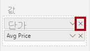
행렬 시각적 개체의 크기를 늘려 페이지 너비와 높이를 채웁니다.
다음의 다섯 가지 측정값을 행렬 시각적 개체에 추가합니다.
Median Price
Min Price
Max Price
Orders
Order Lines
결과가 적절하게 표시되고 서식이 올바르게 지정되었는지 확인합니다.
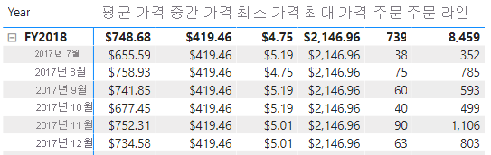
작업 2: 추가 측정값 만들기#
이 작업에서는 보다 복잡한 수식을 사용하는 추가 측정값을 만듭니다.
보고서 뷰에서 1페이지를 선택합니다.
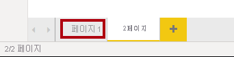
Target 열의 합계를 확인하여 테이블 시각적 개체를 검토합니다.

테이블 시각적 개체를 선택하고 시각화 창에서 Target 필드를 제거합니다.
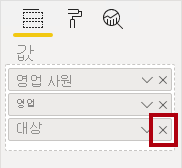
Targets | Target 열의 이름을 Targets | TargetAmount로 바꿉니다.
팁: 보고서 뷰에서 열의 이름을 바꾸는 방법은 여러 가지가 있습니다. 필드 창에서 열을 마우스 오른쪽 단추로 클릭한 다음, 이름 바꾸기를 선택합니다. 또는 열을 두 번 클릭하거나 F2 키를 누릅니다.
Target이라는 측정값을 만들려고 합니다. 동일한 테이블에 동일한 이름의 열과 측정값이 포함될 수는 없습니다.
Targets 테이블에 다음 측정값을 만듭니다.
DAX
Target = IF( HASONEVALUE('Salesperson (Performance)'[Salesperson]), SUM(Targets[TargetAmount]) )
HASONEVALUE() 함수는 Salesperson 열에 단일 값이 필터링되었는지 여부를 테스트합니다. True로 설정되면 식이 해당 판매 직원에 대해 목표 금액 합계를 반환합니다. False로 설정되면 빈 값이 반환됩니다.
Target 측정값의 서식을 소수점 이하 0자리로 지정합니다.
팁: 측정값 도구 상황별 리본을 사용할 수 있습니다.
TargetAmount 열을 숨깁니다.
팁: 필드 창에서 열을 마우스 오른쪽 단추로 클릭한 다음, 숨기기를 선택할 수 있습니다.
테이블 시각적 개체에 Target 측정값을 추가합니다.
Target 열 합계는 이제 비어 있습니다.

조각 파일 정의를 사용하여 Targets 테이블에 대해 다음 2개의 측정값을 만듭니다.
Variance
Variance Margin
Variance 측정값의 서식을 소수점 이하 0자리로 지정합니다.
Variance Margin 측정값의 서식을 소수점 이하 두 자리 백분율로 지정합니다.
Variance 및 Variance Margin 측정값을 테이블 시각적 개체에 추가합니다.
모든 열과 행을 확인할 수 있도록 테이블 시각적 개체의 크기를 조정합니다.

모든 영업 직원이 목표를 달성하지 못한 것처럼 보이는 이유는 테이블 시각적 개체를 아직 특정 기간별로 필터링하지 않았기 때문입니다. 추후 Power BI Desktop에서 보고서 디자인, 1부 랩에서 사용자가 선택한 기간을 기준으로 필터링하는 판매 성과 보고서를 생성합니다.
필드 창의 오른쪽 위 모서리에서 창을 축소했다가 확장하여 엽니다.
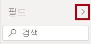
창을 축소했다가 다시 열면 내용이 다시 설정됩니다.
이제 Targets 테이블이 목록의 맨 위에 나타납니다.

보여지는 측정값으로만 구성된 테이블은 자동으로 목록의 맨 위에 나열됩니다.
작업 3: 완료#
이 작업에서는 랩을 완료합니다.
Power BI Desktop 파일을 저장합니다.
다음 랩을 시작하려는 경우 Power BI Desktop을 열어 둡니다.
다음 Power BI Desktop에서 DAX 계산 만들기, 2부 랩에서 DAX를 사용한 추가 고급 계산으로 데이터 모델을 향상합니다.